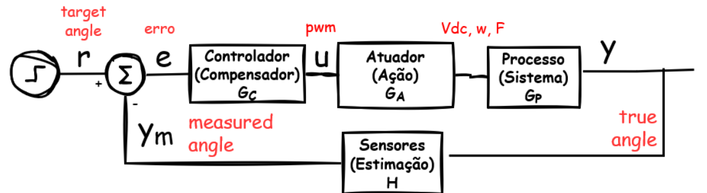

Controlador
Em Engenharia de Controlo, um controlador é o bloco que transforma objetivos de desempenho (referência (r)) em uma ação de controlo (u) aplicada à planta para obter a saída (y) desejada. O controlador pode ser analógico ou digital e é especificado a partir de requisitos como estabilidade, precisão, tempo de resposta e robustez.

Processo / Planta
Em Engenharia de Controlo, um sistema é uma abstração de uma porção da realidade física que permite análise e projeto. A essa entidade física controlada chama-se processo ou planta (plant). A planta possui entradas manipuladas (sinais que podem ser aplicados, p. ex., tensão num motor ou força num carrinho) e saídas medidas (grandezas observáveis, p. ex., velocidade do motor/carrinho ou ângulo num aeropêndulo/pêndulo invertido). A relação dinâmica entre entradas e saídas pode apresentar inércia, atrasos, saturações e não linearidades, e é frequentemente modelada por funções de transferência ou modelos em espaço de estados, representáveis por equações, diagramas de blocos e respostas temporal/frequencial.
A planta pode estar sujeita a perturbações externas (variação de carga, inclinação da pista, correntes de ar, atrito variável), que alteram a saída sem atuação direta. Em síntese, a planta é o objeto físico com entrada (u) e saída (y) cuja dinâmica se pretende compreender e controlar.
Controlo em malha aberta
No controlo em malha aberta não existe realimentação da saída durante a operação. A ação (u) é calculada a partir da referência (r) usando um modelo/curva de calibração do sistema. Em termos simples, utiliza-se a função de transferência inversa (ou a calibração inversa estática) para mapear (\(r \mapsto u\)), assumindo que a planta se comporta como previsto: $\(u \approx P^{-1}(r) \quad \Rightarrow \quad y \approx r\)$ Funciona bem quando a relação entrada-saída é previsível e estável, as perturbações são pequenas e as variações de parâmetros são negligenciáveis.
Vantagens (malha aberta)
Arquitetura simples, implementação e verificação diretas.
Sem sensores de realimentação: menor custo e latência.
Ausência de problemas de estabilidade introduzidos pelo controlador (não fecha laço).
Desvantagens (malha aberta)
Não compensa perturbações ou variações da planta em tempo real.
Exige modelo/calibração precisos; erros de modelo traduzem-se em erro permanente.
Sensível a derivas, tolerâncias e não linearidades não modeladas.
Diagrama (malha aberta)
flowchart LR
R([r]) --> C[["Controller ~ approx P^-1"]]
C -->|u| P[["Plant P(s)"]]
P -->|y| Y([y])
Controlo em malha fechada
No controlo em malha fechada existe realimentação: mede-se (y) em tempo real, forma-se o erro (e=r-y) e o controlador ajusta (u) continuamente para reduzir esse erro e rejeitar perturbações. O projeto pode ser feito no domínio do tempo (PID, controlo por estados) ou da frequência, tendo em conta estabilidade, margens e desempenho.
Vantagens (malha fechada)
Rejeição de perturbações e acomodação de variações da planta.
Redução de erro em regime; possibilidade de impor desempenho (tempo de resposta, ultrapassagem).
Maior robustez face a incertezas do modelo.
Desvantagens (malha fechada)
Requer medição da saída (sensor), podendo introduzir ruído e custo.
Necessita sintonia; escolhas inadequadas podem degradar desempenho ou causar instabilidade.
Pode exigir maior capacidade de processamento/latência controlada.
Diagrama (malha fechada)
flowchart LR
R([r]) --> SUM((sum))
Y([y]) -->|"-1"| SUM
SUM -->|e| C[["Controller"]]
C -->|u| P[["Plant P(s)"]]
P -->|y| Y